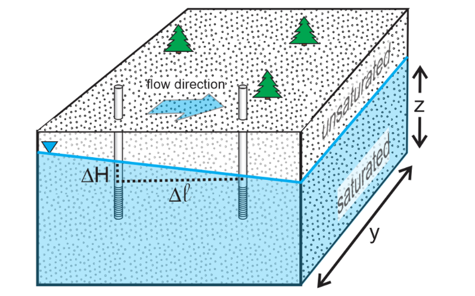
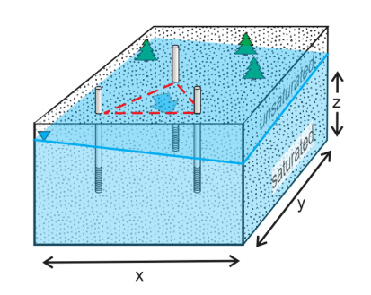
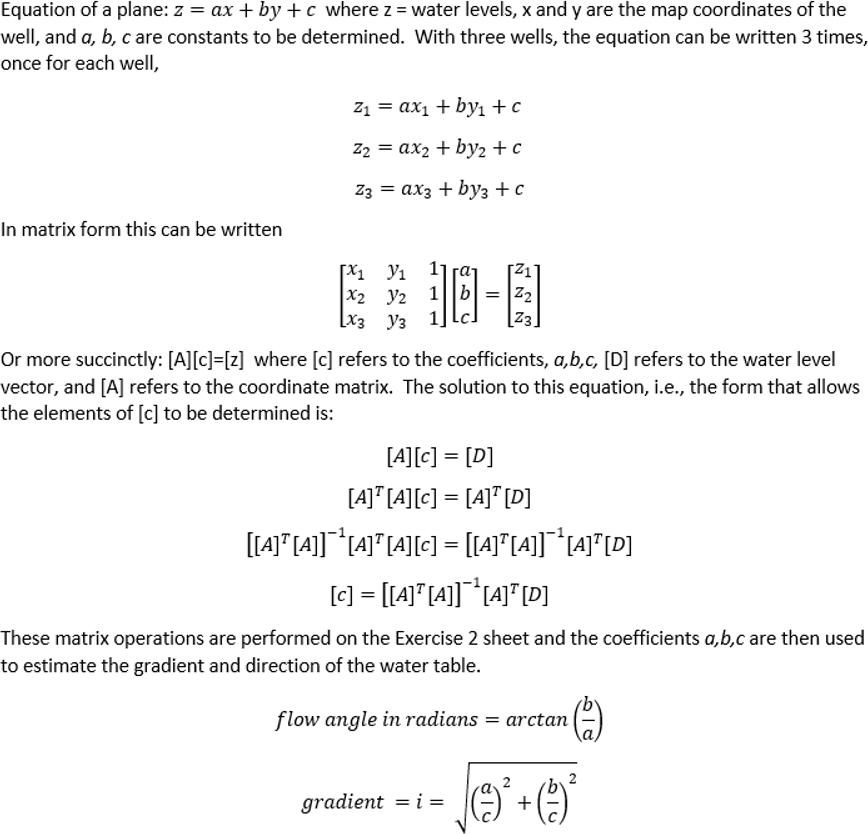

5. Ground Water Velocity#
To calculate, Ground Water Velocity one of the most simple approximation that can be used is the Darcy’s Law to by incorporating the parameters K, i, and A. Will enable you to model and analyze the flow of groundwater in a simplified yet effective manner displaying the flow direction and velocity ultimately.
Darcy’s Law relates the discharge rate (Q) to measurable properties: hydraulic conductivity (K) and hydraulic gradient (i), which is the change in hydraulic head (ΔH) over a given distance (Δℓ). Mathematically, this can be expressed as:
\( \)
Darcy flux or specific diescharge is defined as : $\(q = -\frac{K \cdot \Delta H}{\Delta \ell}\)$
Finally seepage velocity can be calculated by: $\(v = \frac{q}{n_e}\)$
Typically in the process of determining Ground water velocity with the Darcy Law there are Two types of problems
2 Point Porblem
3 Point Problem
In a 2 Point problem, 2 observation wells are placed, in this type of problem the flow direction is known and using the other parameters such as ΔH, Δℓ, K, ne the ground water velocity is calculated from the equations listed above the folloiwng figure illustrates the two point problem.
{kind=link}
In a 3 Point problem, 3 observastion wells are placed, in this the flow direction is not known and using matrix algebra the flow direction and the ground water velocity is calculated.
{kind=link}
The three point problem is can be solved using a system of linear equationss and matrices.
{kind=link}
Acknowledgements: Devlin, J.F., 2020, Groundwater Velocity. The Groundwater Project, Guelph, Ontario, Canada.a
import numpy as np
import matplotlib.pyplot as plt
# Test case for three_point function
x = [2,3, 7] # x coordinates
y = [3, 7, 3] # y coordinates
z = [98, 100, 96] # z coordinates
heads = [1, 1, 1] # Heads at points 1, 2, and 3
def two_point(H1,H2,L,ne,K) :
if H2>H1 :
dh=H1-H2
else :
dh=H2-H1
q=-K*dh/L
v=q/ne
print("The Ground Water Velocity is:",v)
def three_point(x,y,z,heads) :
AT = np.array([x,y,z]) # transpose matrix
A = np.transpose(AT) #orignal matrix
#print(x,y,z,heads)
ATA = np.dot(AT,A) #matrix multiplicaion
ATA_1 = np.linalg.inv(ATA) #inverse matrix
AT_H = np.dot(AT, heads) # Multiply AT with head
result_1= np.dot(ATA_1, AT_H) # matrix multiplication
angle = np.arctan(result_1[1] / result_1[0])
angle_in_degrees = np.degrees(angle)
# Extract components
x_component = result_1[0] / result_1[2]
y_component = result_1[1] / result_1[2]
# Calculate magnitude
magnitude = np.sqrt(x_component**2 + y_component**2)
print("Flow Angle in Radians: ",angle)
print("Flow and in Degrees",angle_in_degrees)
print("Flow Velocity",magnitude)
# Append the first point to close the triangle
x.append(x[0])
y.append(y[0])
# Calculate centroid
centroid_x = np.mean(x[:-1])
centroid_y = np.mean(y[:-1])
# Angle in degrees (specify your angle)
angle_degrees = angle_in_degrees
# Convert angle to radians
angle_radians = np.deg2rad(angle_degrees)
# Length of line (base/4)
line_length = (x[2] - x[0]) / 4
# Calculate endpoint of line
line_endpoint_x = centroid_x + line_length * np.cos(angle_radians)
line_endpoint_y = centroid_y + line_length * np.sin(angle_radians)
# Calculate head length (base/16)
head_length = line_length / 4
# Plot triangle
plt.figure(figsize=(6, 6))
plt.plot(x, y, marker='o')
plt.fill(x, y, alpha=0.2)
# Annotate vertices
for i, txt in enumerate(z):
plt.annotate(txt, (x[i], y[i]), textcoords="offset points", xytext=(0, 10), ha='center')
# Plot centroid
plt.plot(centroid_x, centroid_y, marker='x', color='red', markersize=10)
# Draw arrow
plt.arrow(centroid_x, centroid_y, line_endpoint_x - centroid_x, line_endpoint_y - centroid_y,
head_width=0.5*head_length, head_length=head_length, fc='blue', ec='blue')
plt.xlabel('X')
plt.ylabel('Y')
plt.title('Ground Water Flow direction- 3 Well Problem')
plt.annotate('Flow Direction',(centroid_x+min(x)/8,centroid_y))
plt.grid(True)
plt.show()
#three_point(x, y, z, heads)
5.1. Enter Data into#
import ipywidgets as widgets
from IPython.display import display, clear_output
# Initialize empty lists to store coordinates and heads
x1_list = []
y1_list = []
z1_list = []
heads = []
# Function to run when the dropdown selection changes
def on_dropdown_change(change):
global x1_list, y1_list, z1_list, heads
x1_list = []
y1_list = []
z1_list = []
heads = []
if change.new == '2 Point Problem':
#clear_output(wait=True)
head1=widgets.FloatText(value=10, description='Head 1')
head2=widgets.FloatText(value=20, description='Head 2')
distance=widgets.FloatText(value=5, description='Distance between Points')
ne=widgets.FloatText(value=0.6, description='ne')
K=widgets.FloatText(value=0.001, description='K')
hbox1 = widgets.HBox([head1, head2])
hbox2 = widgets.HBox([distance,ne,K])
vbox = widgets.VBox([hbox1, hbox2])
display(vbox)
# Call the two_point function with the stored values
two_point(head1.value, head2.value, distance.value,ne.value, K.value)
elif change.new == '3 Point Problem':
# Create nine FloatText widgets
#print("Well 1 cordinates")
widget1 = widgets.FloatText(value=2, description='Well 1 X post.')
widget2 = widgets.FloatText(value=3, description='Well 1 Y post.')
widget3 = widgets.FloatText(value=98, description='Well 1 Head')
#print("Well 2 cordinates")
widget4 = widgets.FloatText(value=3, description='Well 2 X post.')
widget5 = widgets.FloatText(value=7, description='Well 2 Y post.')
widget6 = widgets.FloatText(value=100, description='Well 2 Head')
widget7 = widgets.FloatText(value=7, description='Well 3 X post.')
widget8 = widgets.FloatText(value=3, description='Well 3 Y post.')
widget9 = widgets.FloatText(value=96, description='Well 3 Head')
# Function to be called on widget change
def on_widget_change(change):
clear_output(wait=True)
# Create three HBox layouts to contain the widgets
hbox1 = widgets.HBox([widget1, widget2, widget3])
hbox2 = widgets.HBox([widget4, widget5, widget6])
hbox3 = widgets.HBox([widget7, widget8, widget9])
# Create a VBox layout to contain the three HBox layouts
vbox = widgets.VBox([hbox1, hbox2, hbox3])
# Display the VBox layout
display(vbox)
list_x = [widget1.value, widget4.value, widget7.value]
list_y = [widget2.value, widget5.value, widget8.value]
list_z = [widget3.value, widget6.value, widget9.value]
h=[1,1,1]
three_point(list_x,list_y,list_z,h)
widget1.observe(on_widget_change, 'value')
widget2.observe(on_widget_change, 'value')
widget3.observe(on_widget_change, 'value')
widget4.observe(on_widget_change, 'value')
widget5.observe(on_widget_change, 'value')
widget6.observe(on_widget_change, 'value')
widget7.observe(on_widget_change, 'value')
widget8.observe(on_widget_change, 'value')
widget9.observe(on_widget_change, 'value')
on_widget_change(None)
# Dropdown widget to select between 2 or 3 point problems
dropdown = widgets.Dropdown(options=['Select', '2 Point Problem', '3 Point Problem'], description='Problem Type')
# Register the function to be called when the dropdown value changes
dropdown.observe(on_dropdown_change, names='value')
# Display the dropdown
display(dropdown)